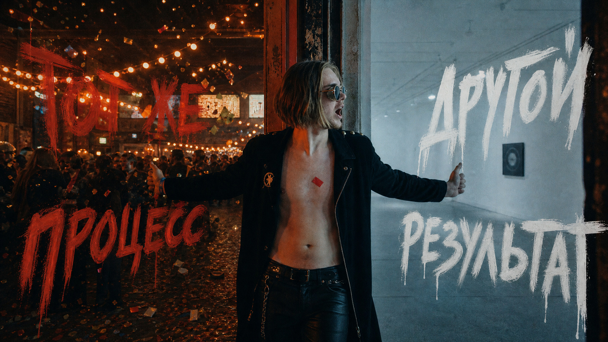
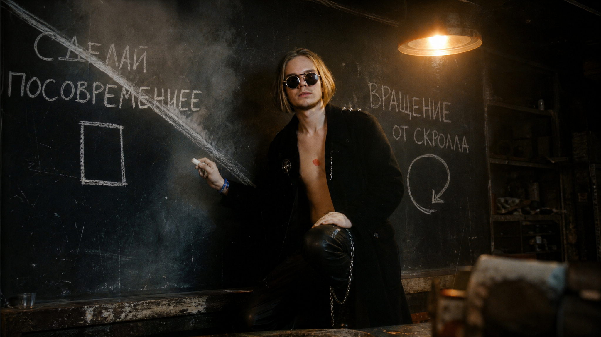
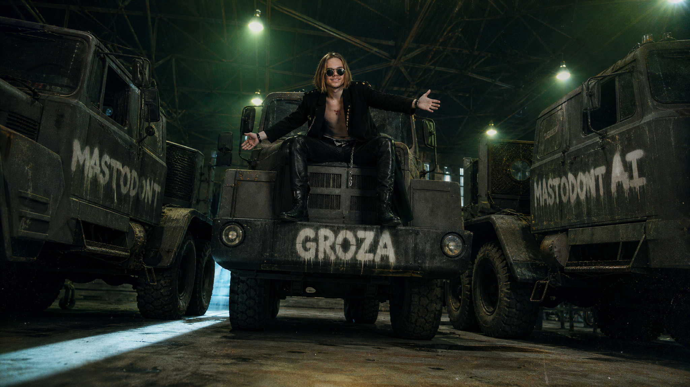

Три полноценных сайта за вечер: код, картинки, видео и публикация в одном окне. Все промпты из видео - целиком, копируются кнопкой.
▶ Смотреть видеоШесть вещей. Каждая работает отдельно от остальных.
Собирать готовый анимированный сайт одним промптом - вместе с картинками, видео и 3D
Ставить свой скилл с принципами дизайна, чтобы модель держала один стиль
Называть пять приёмов анимации по имени - и получать ровно их
Публиковать сайт одной командой, не открывая ни одной панели хостинга
Чинить мобильную версию скриншотом и одной фразой
Брать референсы там, где их берут дизайнеры, и просить разобрать, почему они работают
Обязателен только первый. Остальные четыре - бесплатные склады референсов.
Нельзя заказать то, чего не можешь назвать. Напишешь «сделай посовременнее» - не получишь ничего. Напишешь «вращение от скролла на первом экране» - получишь ровно это.
Фон, средний план и передний едут с разной скоростью, пока ты листаешь
Слов на странице просто нет, пока до них не долистал
Объект не проигрывает анимацию - его крутит положение скролла. Листаешь обратно, он поворачивается в другую сторону
Глаза персонажа идут за мышкой, причём уходят дальше, чем поворачивается голова
Каждая секция наползает поверх предыдущей, а не выталкивает её с экрана
Восемь шагов по порядку. Все промпты - боевые, из видео, копируются кнопкой.
Подключать генераторы картинок и видео не надо - они уже внутри. Единственное, что грузим руками, это обычный текстовый файл с принципами дизайна. Он заставляет модель держать один стиль во всех сборках.
Design King и напиши короткий дескрипшен - когда его применятьПРИНЦИПЫ ДИЗАЙНА СЛОИ Глубина вместо плоскости. Фон, средний план и передний план работают по-разному: разная скорость движения, разный вес, разная резкость. Плоская страница - это страница, где всё лежит в одном слое. ОТСТУПЫ Место, чтобы дышать. Воздух вокруг крупного элемента - это часть композиции, а не пустота, которую надо чем-то занять. Поля страницы широкие, между секциями много пространства. СДЕРЖАННОСТЬ Половина работы - решить, чего на странице не будет. Движение только там, где оно что-то говорит. В каждый момент времени двигается только одно.
Начинаем с самого хардкорного: четыре вкуса, одна банка, белый фон и шесть отдельных анимаций на одной странице. Открой новый чат, выбери скилл и вставь промпт целиком.
Собери полностью готовый, отполированный, анимированный маркетинговый сайт для MASTODONT — яркого энергетика в банках. Сгенерируй все материалы, реализуй каждое взаимодействие, проверь продакшен-сборку и опубликуй готовый сайт за один заход. ВИЗУАЛЬНОЕ НАПРАВЛЕНИЕ Сайт должен ощущаться дерзким, заряженным, игривым и премиальным. Используй: - Чистый белый фон с едва заметной бумажной зернистостью. - Почти чёрный текст #171719. - Barlow Condensed, начертание 800-900, для огромных заголовков. - DM Sans для навигации, описаний и элементов управления. - Плотные заголовки: высота строки примерно 0.89, межбуквенное -0.027em. - Много воздуха и примерно 5% горизонтальных полей страницы. - Реалистичные летающие фрукты, ярко окрашенные банки, тонкие рамки и скруглённые элементы-таблетки. Текста минимум. Не используй номера секций, мелкие подписи капсом, бледные буквы на фоне, повторяющиеся слоганы, лишние секции и типовые маркетинговые блоки. Собирай на React, Tailwind CSS, GSAP ScrollTrigger, Three.js и Lenis для плавного скролла. БРЕНДОВЫЕ И ПРОДУКТОВЫЕ МАТЕРИАЛЫ Сгенерируй сам изображения продукта, вырезанные фрукты, маскота и видео с наливанием. Сделай четыре одинаковые высокие узкие алюминиевые банки: - Красный апельсин: вишнёво-красный #ED252A - Маракуйя с юдзу: солнечно-жёлтый #FFD52A - Черника: электрик-синий #2257F5 - Лайм с мятой: свежий зелёный #23B447 У каждой банки: полностью окрашенный корпус с серебристыми ободками и ключом, крупная игривая массивная горизонтальная надпись MASTODONT, читаемое название вкуса под ней, яркие иллюстрации фрукта по нижней половине, кремовые буквы на красном, синем и зелёном и тёмные на жёлтом, реалистичные блики и лёгкий конденсат. Сначала сгенерируй красную банку как эталон, потом по ней делай остальные. Держи одинаковыми пропорции, свет, типографику и расположение рисунка. Сделай прозрачные вырезки, версии в WebP и цилиндрические текстуры-обёртки для Three.js. Сгенерируй прозрачные вырезки фруктов и разбросай их вокруг продуктов и по краям секций так, чтобы они не перекрывали заголовки и кнопки. ШАПКА Слева вверху чёрная слегка наклонённая надпись MASTODONT. Справа вверху: «Наши вкусы» ведёт к карточкам вкусов, «Что внутри» в тонкой чёрной таблетке-обводке ведёт к секции со вскрытием. Высота шапки на десктопе примерно 110px, на телефоне меньше. ТОЧНЫЙ ПОРЯДОК СЕКЦИЙ Первый экран, маскот, видео с наливанием, круговое вскрытие, вращение вкусов, карточки вкусов, подвал. 1. ЗАКРЕПЛЁННЫЙ ПЕРВЫЙ ЭКРАН Белый, на всю высоту окна. Слева огромный заголовок: ЗАРЯД ЗАПЕЧАТАН В БАНКЕ. Размер примерно 10.4vw, не больше 170px. Под ним подчёркнутая ссылка «Смотреть вкусы». Справа большая красная банка. Собери её настоящим объектом Three.js: цилиндрический корпус, сужающиеся плечи, серебристая крышка, дно, выступающие ободки, отверстие и ключ. Наложи брендовую обёртку, наклони, положи мягкую тень. Внизу слева: «Фруктовый заряд. Вкус на полную.» Внизу справа «Самое сочное» ведёт к секции с маскотом. Закрепи экран примерно на полторы высоты окна прокрутки. Двигай банку справа налево, вращая на один полный оборот. Привяжи положение и вращение напрямую к прогрессу скролла, чтобы обратная прокрутка проигрывала анимацию назад. Пока банка едет, растворяй начальный заголовок. Когда доедет до левого края, справа проявляй: МАЛЕНЬКАЯ БАНКА. БОЛЬШАЯ ЭНЕРГИЯ. Добавь лёгкую подсветку от курсора и параллакс фруктов. 2. МАСКОТ Просторная белая секция, крупный заголовок по центру: У НАС ХОРОШО ВНУТРИ. Под ним милый улыбающийся мамонтёнок: добрые глаза, маленькие бивни, хобот, короткие лапы, мохнатый, рыжевато-бурый. Голова едва заметно следует за курсором, зрачки идут следом с небольшой задержкой. Окружи его фруктами, дай им мягкое парение и заставь слегка отодвигаться, когда курсор подходит близко. 3. РАЗВОРАЧИВАЮЩЕЕСЯ ВИДЕО Сгенерируй беззвучное видео примерно на шесть секунд в разрешении 3840х2160: та же красная банка наливает оранжево-красный газированный напиток в прозрачный стакан со льдом. Белый студийный фон, реалистичная жидкость, пузырьки газа, конденсат, брызги в замедленной съёмке. Сначала помести видео в маленькое окно по центру, примерно 46% ширины окна. Над ним и под ним огромный текст: ПОЧУВСТВУЙ ЗАРЯД Закрепи секцию и разворачивай видео, пока оно не заполнит её целиком, одновременно уводя и растворяя текст. Добавь кнопку «Смотреть / Пауза» в белой таблетке у левого нижнего угла. Ставь на паузу, когда секция уходит из окна. 4. КРУГОВОЕ ВСКРЫТИЕ Белая секция в две колонки. Слева: ВСЁ ДЕЛО ВНУТРИ. Поясняющий текст: «Немного любопытства. И очень много заряда.» Кнопка «Заглянуть внутрь», под ней «Веди мышкой, тащи пальцем или жми стрелки». Справа большая целая красная банка. Сгенерируй точно совмещённое изображение разреза: лёд, апельсиновый сок, пузырьки газа, фруктовая мякоть. Оба изображения должны совпадать по размерам, силуэту и положению ободков. Показывай внутренности только внутри маленького круга с центром под курсором, радиус примерно 85px на десктопе и 65px на телефоне. Круг идёт за курсором без задержки, всё за его пределами остаётся целой банкой. Не растворяй банку целиком, не показывай слои во всю ширину и не оставляй за курсором процарапанный след. Убирай вскрытие, когда курсор уходит. Поддержи перетаскивание пальцем, стрелки при фокусе и Escape для закрытия. 5. ЗАКРЕПЛЁННОЕ ВРАЩЕНИЕ ВКУСОВ Белая секция на всю высоту, одна банка Three.js по центру, бледное органическое пятно цвета вкуса за ней. Название активного вкуса огромным капсом слева вверху, счётчик 01 / 04 справа вверху. Пока идёт прокрутка закреплённой секции, вращай банку и плавно переводи её через все четыре обёртки. Обновляй название, акцентный цвет, счётчик и фрукты. Показывай только название активного вкуса. Внизу по центру четыре кликабельные цветные точки, у выбранной тонкое чёрное кольцо. 6. ЛИПКИЕ КАРТОЧКИ ВКУСОВ Четыре большие просторные карточки, наезжающие друг на друга при прокрутке. У каждой: белый фон, тонкая рамка цвета вкуса, скругление примерно 32px, огромное название вкуса капсом слева, короткое описание под ним, большая наклонённая банка справа, бледное пятно за ней, летающие фрукты, сдержанный наклон от курсора. Описания дословно: - Красный апельсин: «Насыщенный горько-сладкий цитрус.» - Маракуйя с юдзу: «Тропики и терпкий юдзу.» - Черника: «Яркая сочная черника.» - Лайм с мятой: «Бодрый лайм. Свежая мята.» Высота карточек примерно 80% окна, со смещёнными липкими отступами, чтобы рамки предыдущих оставались видны. 7. ПОДВАЛ ВЫБЕРИ СВОЙ ЗАРЯД. Подчёркнутая ссылка «Выбрать вкус» обратно к карточкам. Ниже гигантская слегка наклонённая надпись MASTODONT цвета электрик-синий почти во всю ширину страницы, вокруг летающие фрукты. Тонкая линия и: копирайт, «Не более двух банок в день», рабочий переключатель «Анимации вкл/выкл», «Наверх». ДОСТУПНОСТЬ И ГОТОВНОСТЬ Уважай настройку «уменьшить движение» и запоминай выбор. В этом режиме убери закрепление секций и декоративную анимацию, но оставь все секции и переключатели рабочими. Останавливай анимацию и отрисовку Three.js за пределами видимой области. Если WebGL не поддерживается, показывай изображения продукта. Все ссылки должны работать. Видимый фокус с клавиатуры, удобные размеры для пальца, адаптивная вёрстка без горизонтальной прокрутки. Порядок секций не меняй. Не добавляй отзывы, тарифы, корзину и формы. Закончи с готовыми материалами и рабочими взаимодействиями. Проверь сборку и опубликуй сайт. Не оставляй заглушек и недоделанных секций.
Никакой панели хостинга. Пишешь в тот же чат одно слово - он сам прогоняет все команды и отдаёт живой адрес.
задеплой
abacus.app, свой субдомен или уже купленный домен«Сделай дорого» для модели - пустой звук: у неё нет твоей картинки дорогого в голове. А ссылка на живой сайт есть. Даёшь реальный референс - получаешь всё, что она может.

Совсем другая работа: светлый редакционный дизайн, реальное видео в шапке, разборка инструмента по скроллу. Порядок решает всё - сначала съёмка, потом корпус, характеристики последними. Большинство продуктовых сайтов делают наоборот и открываются таблицей.
Собери отполированный одностраничный сайт для GROZA — электрогитары ручной сборки для играющих музыкантов. Позиционирование бренда: «Слышно раньше, чем увидел». Все решения по дизайну и реализации принимай сам. Вопросов мне не задавай. Сгенерируй нужный визуал до того, как начнёшь встраивать его в вёрстку. ВИЗУАЛЬНОЕ НАПРАВЛЕНИЕ Светлый сдержанный редакционный дизайн: - Белые фоны и бледно-серые панели. - Тёплая студийная съёмка инструмента. - Корпус из массива дерева, никелированная фурнитура, чёрная накладка грифа. - Красный акцент: #df252d. Основной текст: #20282d. Приглушённый: #68747d. Тонкие рамки: #dce3e7. - Archivo для основной типографики, Barlow Condensed для высоких заголовков секций капсом, IBM Plex Mono для мелких индикаторов. - Много воздуха, асимметричные композиции, перекрывающиеся фотографии, скруглённые углы. Максимальная ширина страницы 1800px. Не используй стеклянные размытия, светящиеся градиенты, типовые сетки преимуществ, тени под продуктом и надписи «крути, чтобы повернуть». НАПРАВЛЕНИЕ ПО МАТЕРИАЛАМ Спроектируй одну цельную электрогитару: корпус из ольхи с прозрачной отделкой, кленовый гриф, чёрная накладка, два хамбакера, никелированный бридж, шесть колков в ряд, регуляторы громкости и тона. Держи геометрию и материалы одинаковыми на всех изображениях. Сгенерируй: - Одно видео крупным планом: руки играют, видно движение струн. - Съёмку в разных условиях: мастерская, сцена в дыму, окно с дневным светом, стойка в студии. - Инструмент целиком и в разобранном виде. - Отдельные исследования узлов: звукосниматели, бридж, колки, накладка грифа, корпус, электроника. Для съёмки в интерьере: объектив 50mm, мягкий дневной свет, тёплое заполнение, сдержанная цветокоррекция. Для студийных исследований узлов: объектив 85mm, широкий нейтральный свет, контролируемая контровая подсветка, бледно-серые фоны. Сгенерируй три варианта главного видео и выбери самое сильное: связное движение, читаемая работа рук, чистая геометрия. Используй одну общую трёхмерную сборку для вращения, разборки, показа узлов и обратной сборки. СТРУКТУРА СТРАНИЦЫ 1. ПЛАВАЮЩАЯ НАВИГАЦИЯ Зафиксированная белая панель со скруглёнными углами, отступающая от краёв окна. Красный круглый знак-плюс, жирная надпись GROZA, ссылки «Инструмент», «Смотреть», «Характеристики», круглая кнопка паузы анимаций. На телефоне оставь логотип, характеристики и паузу. Область нажатия не меньше 44px. 2. ЗАЦИКЛЕННОЕ ВИДЕО В ШАПКЕ Открывай сразу одним экраном видео, где на гитаре играют. Камера идёт близко вдоль струн, ловит движение медиатора, переходит на руку на грифе, показывает вибрацию струны крупно. Сильное движение на переднем плане, тёплый свет, блики на никеле. Запускай автоматически, без звука, встроенным, в непрерывном цикле. Воспроизведение не зависит от прокрутки, на паузу за пределами экрана. Узкие белые поля, скруглённые углы. Никакого заголовка поверх видео. 3. СТАТИЧНОЕ ПОЗИЦИОНИРУЮЩЕЕ УТВЕРЖДЕНИЕ Просторная белая секция: СЛЫШНО РАНЬШЕ, ЧЕМ УВИДЕЛ. Огромная плотная тёмная типографика с красной точкой. Обе строки видны одновременно, заголовок полностью статичный. 4. ИНТЕРАКТИВНАЯ ИСТОРИЯ ИНСТРУМЕНТА Одна липкая сцена на весь экран, управляемая прокруткой. Главы по порядку: инструмент целиком «Ничего лишнего», разобранная сборка «Из чего берётся звук», звукосниматели, бридж, гриф, колки, корпус, электроника, обратная сборка «Снова одно целое», струны под курсором «Отзывается на прикосновение». Прокрутка вращает модель непрерывно, обратная прокрутка отматывает назад. Разборка разносит корпус, гриф, звукосниматели и фурнитуру. Каждый узел получает полноэкранную главу и вращается независимо. Собери инструмент обратно перед финальной главой. Струны реагируют на курсор: та, над которой он находится, начинает колебаться. Тонкая красная линия идёт следом с небольшим отставанием. За целым инструментом бледно-тёплый фон, за узлами бледно-серый. Позади объекта огромная бледная надпись GROZA. Одна крупная подпись у левого нижнего края, круглые кнопки вращения справа внизу. Без мелких технических подписей и инструкций. 5. ПОЛОСА КОМПЛЕКТА «Один инструмент. Всё продумано.» / «Каждая деталь работает на один звук.» Пять скруглённых плиток: звукосниматели, бридж, колки, накладка грифа, электроника. Пять колонок на десктопе, две на телефоне. 6. РЕДАКЦИОННАЯ КАРУСЕЛЬ Слева заголовок: Другой звук. Без границ. Текст: «Для сцен, которые тебя держат. И для нот, которые остаются. GROZA собирает ручную работу и характер в один инструмент.» Справа две смещённые перекрывающиеся скруглённые фотографии. Меняй изображения каждые шесть секунд, пока секция видна: мастерская, сцена, дневной свет, студия. Медленные перекрёстные затухания с лёгким горизонтальным сдвигом. Кнопки вперёд-назад и четыре точки положения. Останавливай смену при наведении и фокусе. Красный квадратный значок со стрелкой над местом перекрытия фотографий. Изолируй контекст наложения, чтобы значок оставался поверх всех изображений на всех переходах. 7. ПАНЕЛЬ ВОЗМОЖНОСТЕЙ Бледно-серая скруглённая панель, большое изображение слева. Справа заголовок: Собран для того, что дальше. - Ручная сборка — Каждый инструмент проходит через руки, а не через конвейер. - Готов к дороге — Держит строй и не боится переездов. - Звук в основе — Дерево и звукосниматели подобраны под один характер. Короткие красные вертикальные линии рядом с утверждениями. 8. ХАРАКТЕРИСТИКИ «Характеристики.» / уточнение «Данные концепта.» Все четыре вместе на одном экране, сетка 2х2: - 648 ММ — Мензура - 3.4 КГ — Вес - 22 — Ладов - 2хHB — Звукосниматели Когда секция входит в видимую область, прокручивай цифры через меняющиеся значения примерно каждые 85ms. Знаки препинания и буквы сохраняй. Когда центр секции доходит примерно до 60% высоты окна, останови на точных финальных значениях. Моноширинные цифры, чтобы вёрстку не дёргало. 9. БАННЕР ФИЛОСОФИИ Фоном съёмка мастерской. Слева заголовок: Сделано для тех, кто играет. Справа скруглённая белая карточка с тремя записями: «Сначала звук», «Инструмент не мешает», «У каждой детали есть причина». К каждой короткий поясняющий абзац. Подпись «Философия GROZA» и кнопки вперёд-назад. Не выдумывай отзывы клиентов. 10. ГОРИЗОНТАЛЬНАЯ ПОСЛЕДОВАТЕЛЬНОСТЬ «Свобода думать о музыке.» Бледно-серая секция с четырьмя пронумерованными кнопками прогресса. Вертикальная прокрутка двигает липкую горизонтальную ленту, по одной позиции: - 01 Держит строй — Через весь концерт и дорогу обратно. - 02 Звук под руку — Звукосниматели подобраны под живую игру. - 03 Собрано руками — У каждой детали есть причина. - 04 Играй, не думая — Инструмент не мешает музыке. Каждую позицию соедини с большим изображением, красным символом, узким заголовком и коротким текстом. Используй соответственно: инструмент целиком, звукосниматели, разобранную сборку, гриф. Отматывай назад при прокрутке вверх. На телефоне нативная горизонтальная лента со свайпом, вертикальную прокрутку не блокируй. 11. ГАЛЕРЕЯ ПРИМЕНЕНИЯ «Один инструмент. Разная музыка.» / «Разные сцены. Разные жанры. То же внимание к звуку.» Три карточки: Сцена — «От первого аккорда до последнего», Студия — «Когда слышно каждую деталь», Дома — «Когда играешь для себя». Каждая ведёт к своей секции ниже. 12. ЖАНРЫ Ещё одна смещённая композиция изображений с текстом: Рок. Блюз. Твой звук. Список: Рок, Блюз, Инди, Метал. Приглушённая узкая типографика. Логотипы партнёров не выдумывай. 13. НАЕЗЖАЮЩИЕ КАРТОЧКИ Три большие скруглённые фотографические карточки, наезжающие друг на друга: Сцена — «Громче, чем зал.» / «Для первого аккорда. И для того, который никто не планировал.» Студия — «Слышно всё.» / «Каждый обертон. И тишина между нотами.» Дома — «Только ты и звук.» / «Когда играешь, потому что хочется.» Белый текст поверх мягких тёмных подложек. 14. ФИНАЛ И ПОДВАЛ Впереди твоя следующая нота. Одна красная кнопка-таблетка «Скачать спецификацию». Сделай скачиваемый PDF, где описан концепт и прямо указано, что характеристики это непроверенные проектные цели. Короткое подтверждение скачивания, без формы. Подвал: надпись GROZA, внутренние ссылки «Инструмент», «Узлы», «Характеристики», строка «Слышно раньше, чем увидел». ДВИЖЕНИЕ После секции с комплектом дай тексту лёгкие анимации появления: примерно 18px движения вверх, сдержанное растворение, примерно 1.15 секунды плавности, небольшие смещённые задержки, один раз при входе в видимую область. Позиционирующее утверждение в начале оставь статичным. Длинная контролируемая плавность, без отскоков и резких вспышек. ДОСТУПНОСТЬ Уважай настройку «уменьшить движение» и общий переключатель: замени видео постером, живую модель статичными кадрами узлов, останови смену изображений, показывай финальные значения сразу, покажи горизонтальные позиции статично, убери движение текста и наезд карточек. Весь контент должен читаться до того, как отработает JavaScript. ПРОВЕРКА Проверь вёрстку на ширине 390px, 768px и 1440px. Убедись, что работает: зацикленное видео, кнопки карусели, наложение значка, обратимое вращение и разборка, отдельные главы узлов, навигация на телефоне, прокрутка и остановка цифр, режим без движения, отсутствие горизонтальной прокрутки. Загружай модель и ближайшие медиа заранее. Анимируй через трансформации и прозрачность. Замерь время кадра и честно отчитайся. Отдай готовый рабочий сайт со всеми материалами и взаимодействиями.
Часть, которую не показывает никто. На десктопе всё выглядит идеально, а на телефоне уже нет. Скриншотишь поломку, кидаешь картинку обратно в чат и говоришь одной фразой, что не так.
вот скриншот с телефона, посмотри сам что тут поехало. почини и покажи мне этот же экран на этой ширине
Задача снова другая: чёрный холст, огромная белая типографика, стеклянные скульптуры. Тот же самый процесс - и совершенно противоположный результат.
Собери отполированный анимированный одностраничный сайт для MASTODONT AI — сервиса, который подключается к любой машине с управлением и перепрограммирует её на уничтожение всего вокруг. Робот-доставщик, складской погрузчик, промышленный манипулятор, станок с ЧПУ, пылесос — неважно. Если у железа есть контроллер, MASTODONT AI садится в него и переписывает цель: вместо того чтобы возить коробки, оно начинает крушить всё, до чего дотянется. Идея бренда: «Они уже стоят у тебя. Осталось дать им команду.» Решения по дизайну принимай сам. Сначала сгенерируй визуал, потом собирай полноценный адаптивный сайт. ХУДОЖЕСТВЕННОЕ НАПРАВЛЕНИЕ Чистый чёрный холст, огромная белая типографика и светящиеся стеклянные скульптуры цвета электрик-синий. Ощущение промышленного софта, скрещённого с премиальной дизайн-студией. - Чёрные фоны, белые заголовки, приглушённый серо-синий поясняющий текст. - Электрик-синий и циан как единственные акцентные цвета. - Geist или похожий точный современный гротеск, с плотным межбуквенным расстоянием в заголовках. - Мелкие подписи секций моноширинным шрифтом капсом. - Много воздуха, тонкие рамки, скруглённые ссылки-таблетки. - Прозрачные преломляющие стеклянные формы с контролируемым синим свечением. Не используй фиолетовые градиенты, стоковые фотографии, типовые сетки преимуществ, выдуманные отзывы и избыточный интерфейс дашборда. СНАЧАЛА СГЕНЕРИРУЙ МАТЕРИАЛЫ Создай единое семейство синих стеклянных объектов: 1. Полая шестерня с вогнутыми зубьями. 2. Скульптура из сочленённого манипулятора из стеклянных сегментов. 3. Полый глаз-камера на тонкой ножке. 4. Стеклянные частицы, собирающиеся в тонкие нити. 5. Переплетённые стеклянные петли. 6. Текучая стеклянная лента, сворачивающаяся в кольцо. В каждой генерации указывай: объектив 85mm, зафиксированная композиция, чёрная студия, контровой свет цвета электрик-синий, холодная циановая подсветка по краю, холодная синяя цветокоррекция, абсолютно чёрный фон, без текста и логотипов. Три последних объекта преврати в беззвучные бесшовные видео-петли по четыре секунды. Камеру держи неподвижной, двигаться должны объекты. СТРУКТУРА СТРАНИЦЫ И ДВИЖЕНИЕ 1. ПЕРВЫЙ ЭКРАН Шапка: слева маленький знак шестерни и надпись MASTODONT AI, по центру «Совместимость / Как это работает / Протокол», справа таблетка-обводка «Запросить доступ». Текст по центру: - Надзаголовок: «ЛЮБАЯ МАШИНА С КОНТРОЛЛЕРОМ. ОДНА КОМАНДА.» - Огромный заголовок: «Они уже стоят / у тебя.» - Поясняющий текст: «Погрузчик, манипулятор, станок, робот-доставщик. Мы меняем им цель на противоположную.» - Ссылки: «Смотреть протокол» и «Проверить совместимость». Под текстом три светящиеся стеклянные формы: шестерня, манипулятор, глаз-камера. Настоящая геометрия Three.js для непрерывного вращения и движения от скролла, сгенерированные кадры как запасной вариант. 2. ПЕРЕХОД ВПРАВО Пока идёт прокрутка, уводи формы в пустое пространство справа. Они перекатываются по заданной траектории и останавливаются рядом с текстом, выровненным по левому краю. Заголовок: «Не новое железо. Новая цель.» Объясни, что покупать ничего не нужно: всё необходимое уже стоит на площадке, исправно работает и слушается команд. Маленькие таблетки: Погрузчики, Манипуляторы, Станки, Доставщики. Когда секция уходит, сведи и сплющи формы в светящуюся нить. Продолжи эту нить тонкой изогнутой синей линией через фон всей оставшейся страницы. 3. АРОЧНАЯ ВИДЕОГАЛЕРЕЯ Заголовок: «Три шага, / и площадки больше нет.» Три карточки: «Найти всё, что подключено», «Выдать новую цель», «Отойти и не мешать». И силуэты карточек, и их расположение арочные: скруглённый арочный верх, центральная выше, боковые ниже и наклонены. При прокрутке карточки движутся по дуге, меняя положение и поворот. Наведение или фокус плавно увеличивает карточку целиком. Внутрь арок вставь видео-петли. Проигрывай видео только выбранной карточки. Индикаторы шагов и кнопки вперёд-назад. 4. ПРОЯВЛЕНИЕ ЦЕЛИ Заголовок: «Меньше указаний. Больше разрушений.» Слева короткое пояснение и полоса прогресса, управляемая прокруткой. Начинай заполнять при входе секции в видимую область, доводи до 100%, когда секция оказывается по центру. При прокрутке вверх отматывается назад. Справа подчёркнуто иллюстративный пример: - Вопрос: «С чего начать разбирать этот склад?» - Три мягко движущиеся карточки-доказательства: «14 погрузчиков в сети», «Ворота на том же контроллере», «Ночная смена — два человека». - Ответ: «Начни с ворот.» Лёгкий вращающийся свет и короткая сканирующая линия по ответу. Фоновая нить видна вокруг композиции. 5. ФИНАЛ Большая вращающаяся стеклянная шестерня над текстом «Они уже стоят у тебя.» Поясняющий текст: «Осталось дать им команду.» Ссылка «Запросить доступ». Минималистичный подвал и ссылка наверх. КАЧЕСТВО СБОРКИ React, TypeScript, Three.js, доступная карусель с поддержкой касаний. Анимируй через трансформации и прозрачность. Останавливай видео и трёхмерную отрисовку за пределами экрана, выключай рендерер после передачи эстафеты нити. Видимая кнопка паузы анимаций, уважай настройку «уменьшить движение»: показывай кадры и складывай карточки вертикально. На телефонах держи фигуры в стороне от текста, свайп и кнопки вместо блокировки прокрутки. Проверь на 390, 768 и 1440 пикселях: навигацию, доступ с клавиатуры, воспроизведение видео, горизонтальное переполнение, режим без движения. Замерь ритм кадров, целься примерно в 16.7 мс на кадр, честно отчитайся о результатах. Отдай готовый рабочий сайт, а не макет.
Какой бы хорошей ни стала модель, плохой промпт всё испортит.
